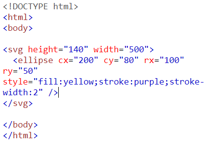

Hva er SVG?
SVG står for Scalable Vector Graphics og er et 2D basert bildeformat. Det kan leses som en XML kode og kan manipuleres manuelt ved hjelp av CSS eller JavaScript.
SVG brukes som oftest til logoer, ikoner animasjoner, illusrtasjoner og/eller skjemaer/grafer. Man kan enten lage en SVG gjennom å kode for hånd eller bruke et bildebehandlingsprogramm som for eksempel Adobe Illustrator eller Sketch, hvilket vill gi deg en .svg fil.
Her er et eksempel på SVG som er skrevet rett i HTML'en:

Dette vill da gi oss:
Her er et eksempel på flere SVG figurer sammen: